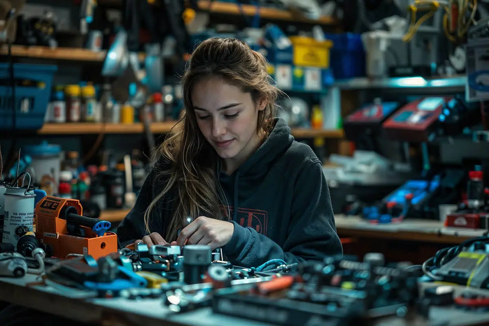
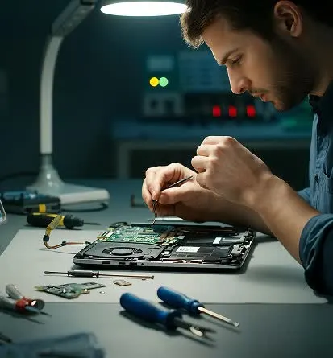

¿Tu ordenador va cada vez más lento, se calienta o no arranca? Las averías de hardware rara vez se arreglan solas, y un disco o una fuente que fallan pueden llevarse tus datos por delante. Hago un diagnóstico completo a nivel de componente en sobremesa, portátil y móvil en toda Tenerife, para que sepas exactamente qué ha fallado y cuánto cuesta repararlo antes de empezar.
De averías de placa base y RAM a puertos de carga, refrigeración, ampliaciones de disco y pasta térmica: reparo a nivel de componente en vez de empujarte un cambio completo. Cada reparación usa piezas compatibles y probadas, y vuelve a tus manos con pruebas de rendimiento y de carga, y con garantía clara sobre el trabajo.
Un buen diagnóstico te evita pagar dos veces. Pruebo alimentación, memoria, salud del disco y temperaturas antes de tocar un destornillador, y luego te explico lo encontrado en lenguaje claro, con un precio cerrado.
Apagones aleatorios, reinicios en bucle, ventiladores ruidosos o un equipo que va caliente y lento.
Aíslo la pieza que falla en vez de cambiar placas enteras a tu costa.
Cada equipo pasa una prueba de carga completa antes de volver a tus manos.

Reparo lo que tiene arreglo y cambio solo lo que no. Componentes originales, trabajo térmico cuidadoso y un montaje limpio hacen que tu equipo salga más silencioso, más fresco y más rápido de como entró.
El hardware se desgasta, pero rara vez falla sin avisar. Diagnósticos periódicos, mantenimiento térmico y cambiar la pieza a tiempo mantienen tus equipos funcionando años más allá del punto en que la mayoría los da por perdidos.

Años de experiencia
Equipos reparados
Clientes satisfechos
Marcas que reparo
Casi todos los diagnósticos quedan el mismo día. Las reparaciones habituales (disco, memoria o refrigeración) se hacen en 24 o 48 horas, según la disponibilidad de la pieza.
No. Clono tu disco antes de cualquier trabajo invasivo, así tus archivos están a salvo aunque la pieza que ha fallado sea justo el disco.
Sí, y también móviles. Trabajo con sobremesas, portátiles, todo en uno y móviles, incluida la reparación de placa a nivel de componente.
Uso componentes originales o de calidad equivalente, y te digo cuál va a entrar en tu equipo antes de montarlo.
Toda reparación de hardware está cubierta por mi garantía de mano de obra, y los repuestos llevan la garantía de su fabricante.